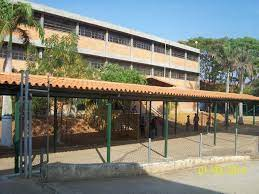

Escuela Técnica Industrial "La Carucieña"
Reseña Histórica

Fue fundada en el mes de Octubre del año 1977 , con el nombre de la E.T.I “La Carucieña”, inicialmente comenzó a funcionar con 6 secciones de 1º año de C.B.I en el año 1979, pasa a llamarse E.B.I:, “Augusto Malave Villalba”, su primer Director fue el Profesor José Gerardo Pérez Linares. Las actividades del área técnica, se inician en aulas improvisadas, ya que los talleres no habían sido construidos y no contaban con los equipos necesarios para el desarrollo de sus prácticas, posteriormente reciben una dotación de máquinas y herramientas empleadas en otras instituciones, que fueron desincorporadas.
Y logran la construcción de los talleres de diversas áreas correspondientes a la especialidad industrial.
Además de la tarea de formación de unos 1400 estudiantes por año, la escuela realiza varias actividades en la comunidad como la realización de cursos y talleres.
Misión
La Institución tiene como misión la formación, capacitación y actualización de jóvenes, aptos para responder a las necesidades y expectativas a la sociedad contemporánea, buscando fortalecimiento en el nivel pedagógico, administración y tecnológico, con el fin de ofrecer una educación en el nivel integral y de calidad que satisfaga las necesidades e intereses de los educando manteniendo un equilibrio con las demandas del desarrollo local, regional, y nacional. Forma individuos con amplio sentido de solidaridad. Abierto al pensamiento universal, con una profunda conciencia ética y critica, con nuevos enfoques paradigmáticos en el conocimiento de la cultura y del mundo.Visión
Esta Institución desea ser escuela modelo a nivel municipal, regional, y nacional e internacional con valoras compartidos, comprometida con el cambio y desarrollo hacia una educación politécnica, humanística integral, participativa y activa que interactúe con la comunidad y su entorno; con el propósito de formar personas criticas y competentes para el presente y futuro de Venezuela.El Plantel desde sus inicios han habido cambios de directores los cuáles fueron:
- Profesor José Gerardo Pérez Linares
- Profesor Antonio Colmenares
- Profesor Rafael García
- Profesor Carlos Gonzáles
- Profesor Alfredo Castillo
- Profesor Jorge Ortiz
- Profesor Víctor Terán
- Profesor Hermes Ramos
- Profesora Yajaira Parra
- Profesor Henry Hernández
 Se inicia un proceso de transformación en cuanto a la misión y visión de la institución. En este mismo año se llevó a cabo una remodelación total de la infraestructura con un costo aproximado de 700 millones, asumiendo como premisa formar talentos humanos con una visión que quiere productividad y servicios según las demandas y políticas nacionales en materia educativa contextualizada a las características locales y regionales.